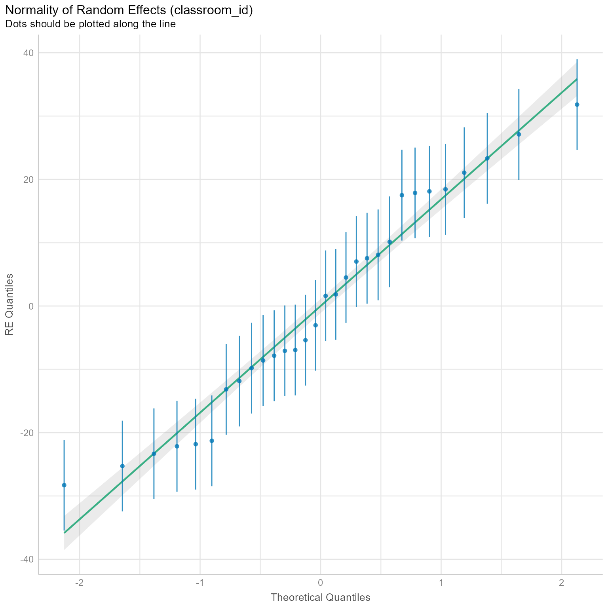
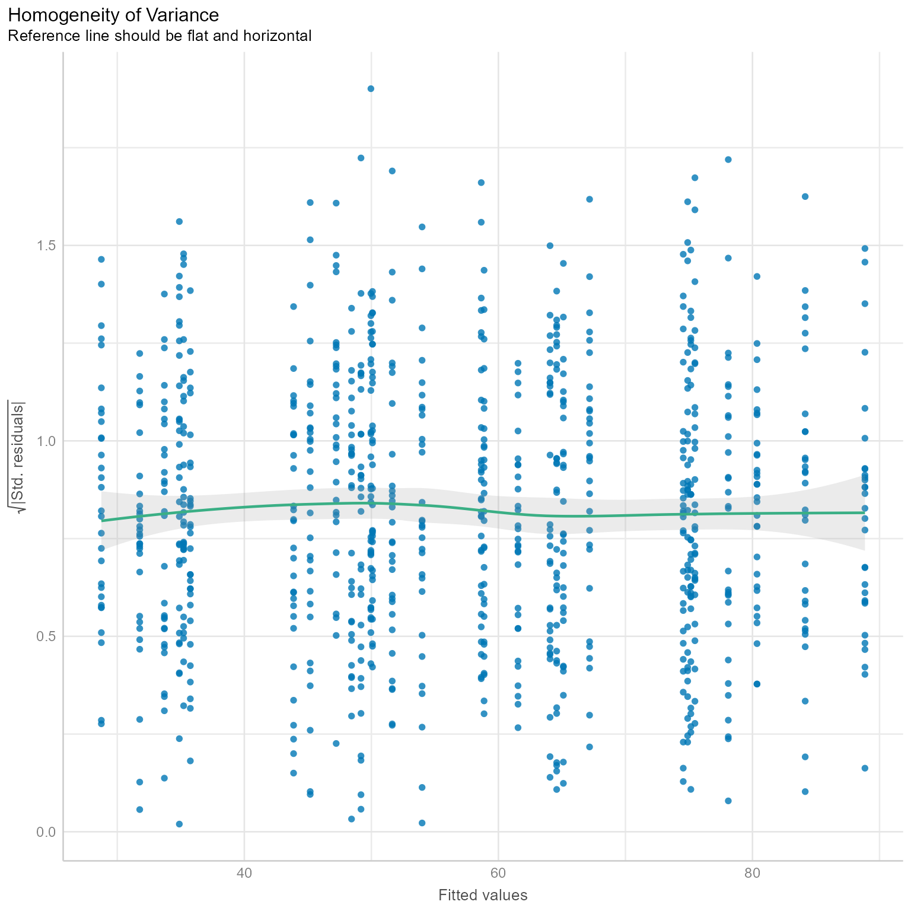
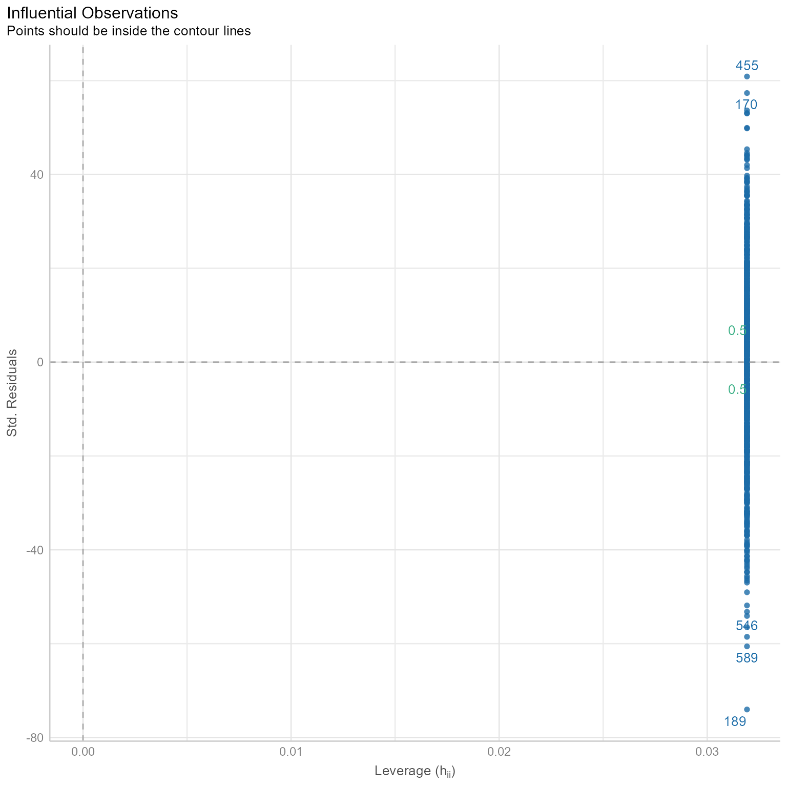
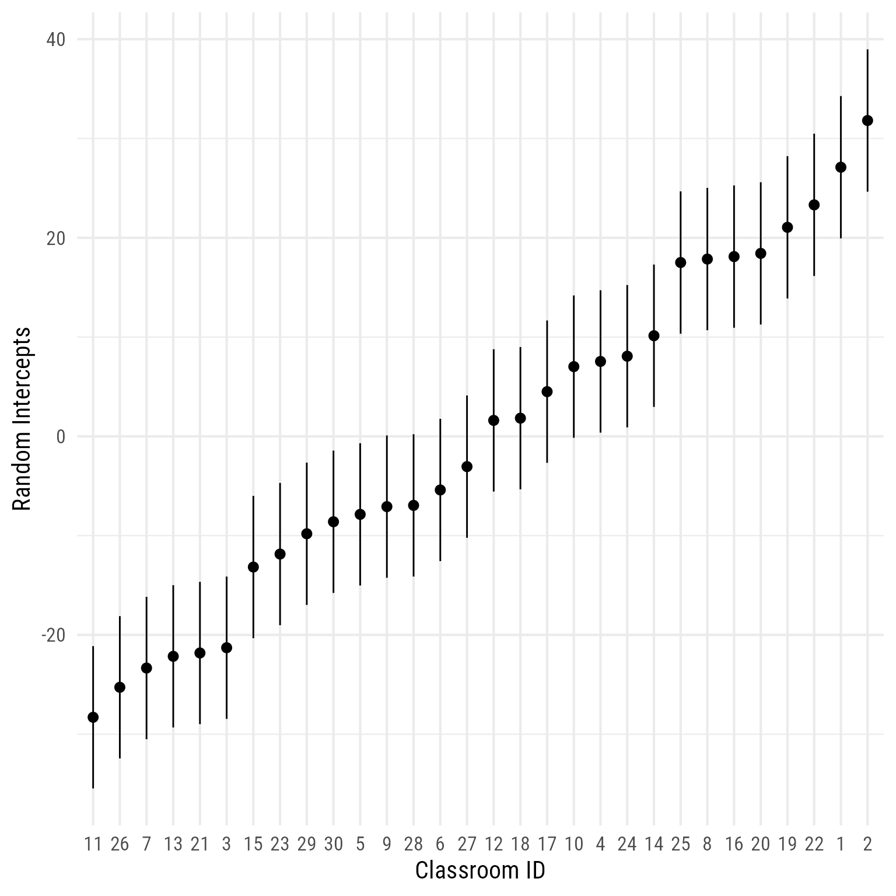
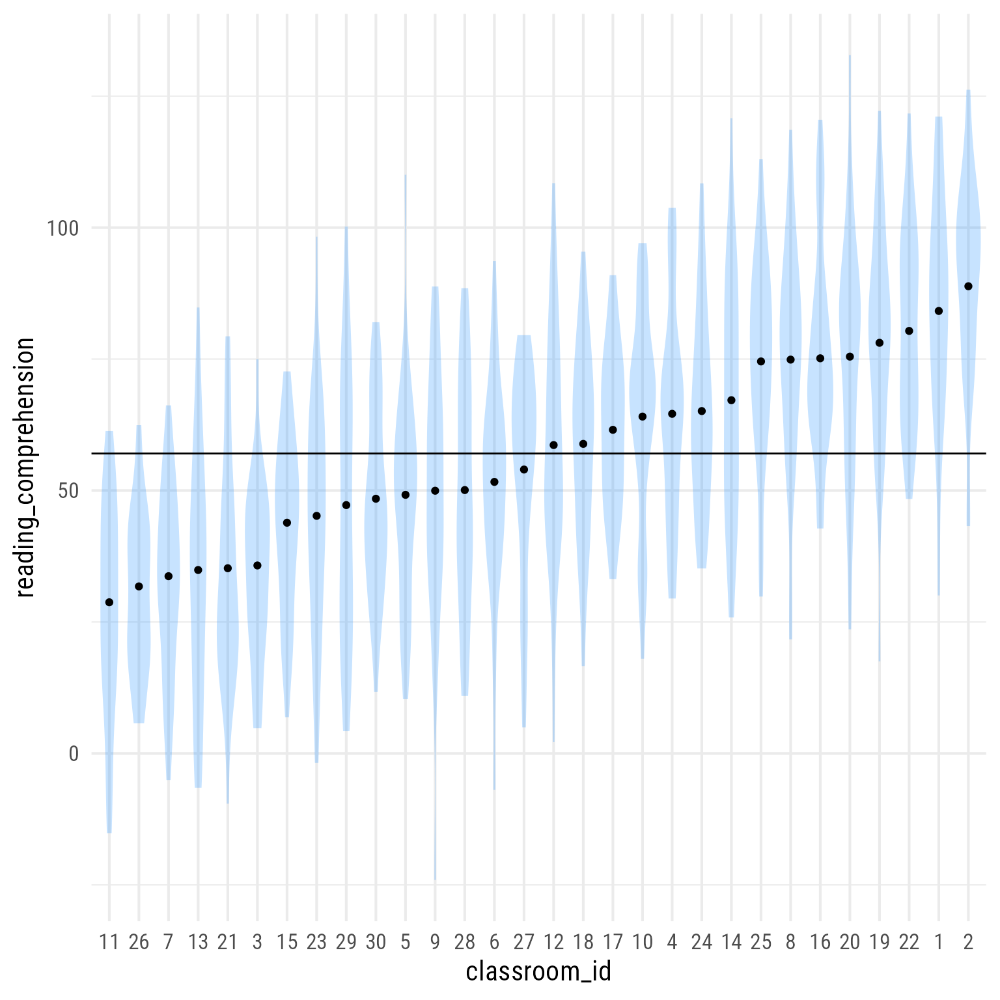
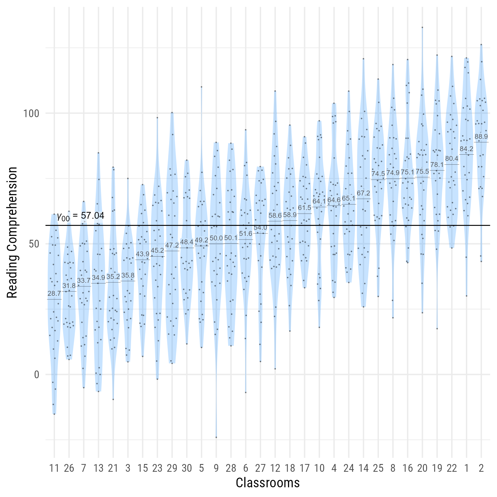
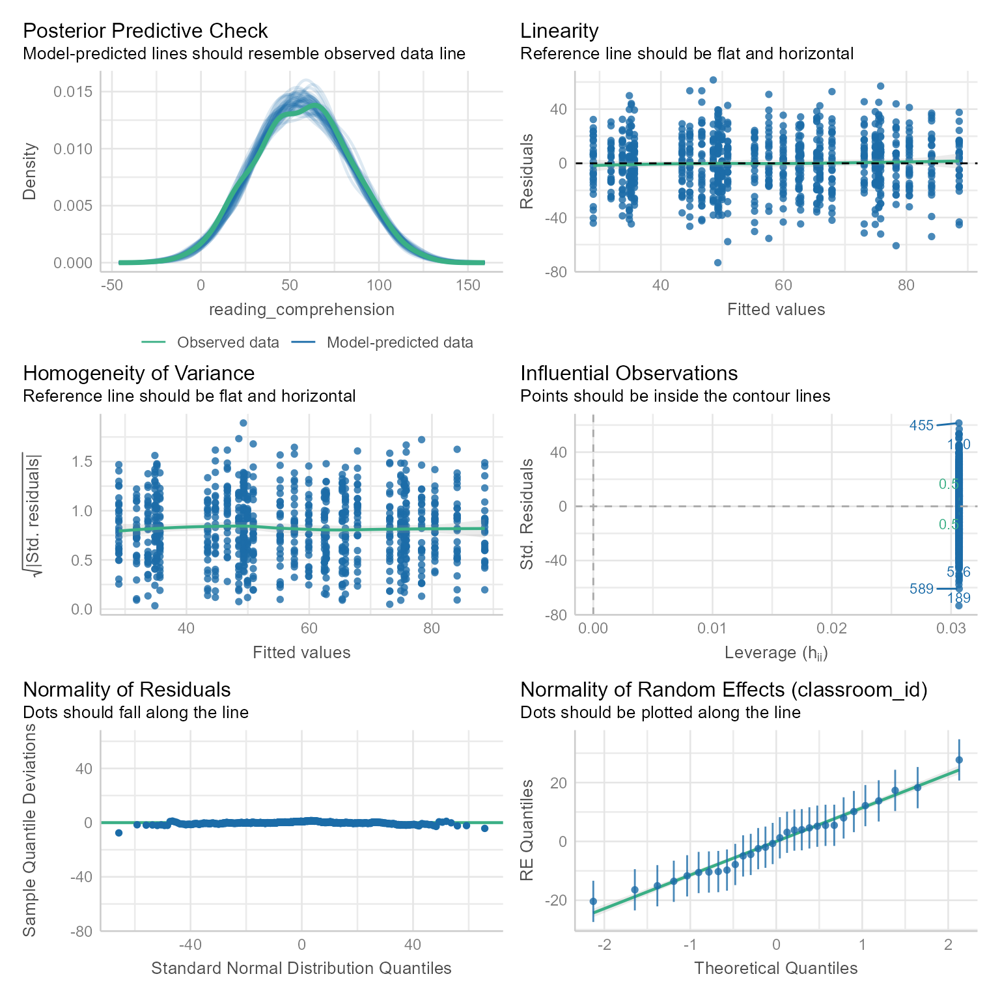
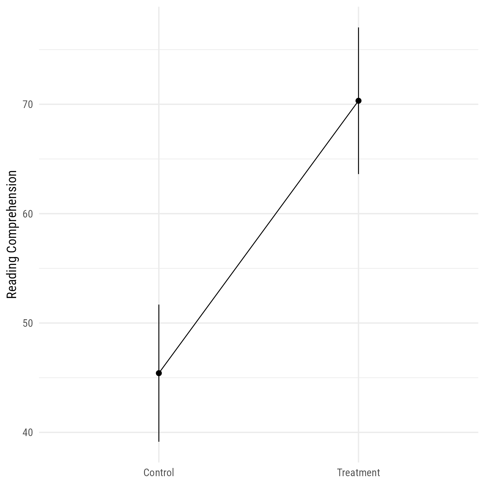
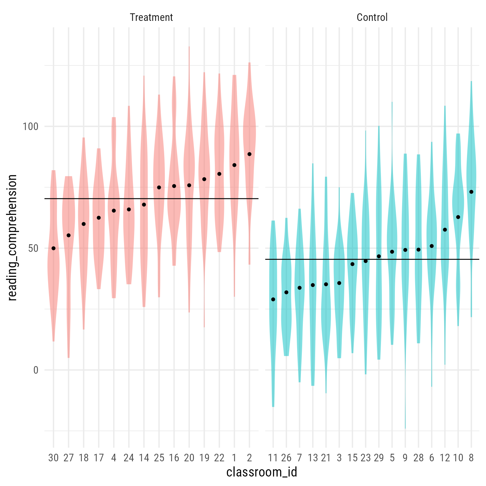

# Install packages, if needed.
if (!require("tidyverse")) install.packages("tidyverse")
if (!require("lme4")) install.packages("lme4")
if (!require("easystats")) install.packages("easystats")
if (!require("marginaleffects")) install.packages("marginaleffects")Fixed vs. Random Effects
In a one-way ANOVA, there is a fixed variable and a random variable. Usually, our focus is on the fixed variable—so much so that we might not realize that the random variable is a variable at all.
A fixed effect is used when the comparisons between groups of scores are meaningful. There is a small, defined number of groups, and all of them are sampled. A random effect is one where the number of groups is open-ended, and the differences between specific groups are not of theoretical interest.
For example, suppose that we compare an outcome variable collected from children who have been given no treatment, a short intervention, and a long-lasting intervention.
Outcome_i=Treatment_i+e_i
- The fixed effect is the treatment variable with 3 group means for the control group, the short intervention group, and the long intervention group.
- The random effect is the difference of each child (e). It is a random effect because there is an open-ended number of children who could have been in our study, and we have no theoretical interest in comparing specific children with other specific children.
The one-way ANOVA comparing the three groups of children will reveal something about the group mean differences on the outcome variable, but nothing substantive about individual children.
Random variables at multiple levels of analysis
In multilevel modeling (and in random-effects ANOVA), we can specify more than one random variable. For example, in educational research, we collect data from many classrooms. Thus, both student and classroom are random variables, because we have no theoretical interest in the differences among specific students or specific classrooms. We cannot collect data from every student or every classroom, so we collect data from a representative number of students and classrooms.
A variable is said to be nested if every unit belongs to exactly one group. In elementary school, each student belongs to one class only. Thus, the student random variable is nested in the classroom random variable.
Because there are many students in each classroom, the student variable is said to be a “level-1 random variable,” and classroom is said to be a “level-2 random variable.”
In middle school and beyond, student and classroom are not nested because each student belongs to multiple classes. In such data sets, student and classroom are said to be crossed random variables.
In longitudinal studies, we have multiple scores per person, one for each time period. Thus the two random variables are time period and person, and time period is nested in person. In this case, the time period is the level-1 random variable and person is the level-2 variable. If these people were arranged in different psychotherapy groups, then therapy group would be a level-3 random variable.
There is no theoretical limit to the number levels your analysis can have, but practical and computational difficulties often arise as the number of levels increases.
A Reading Comprehension Intervention Study
Suppose we study the effects of an intervention on second-grade students’ performance on reading comprehension tests. Some students receive the intervention and some are given treatment-as-usual. We use a cluster-randomized controlled trial, meaning that instead of assigning students to intervention groups individually, we assign whole clusters at a time. In the case, the clusters are classrooms. Thus, some classrooms are in the intervention condition, and some are in the control condition.
Install and Load packages
lme4
The primary package for multilevel modeling we will use in this class is lme4.
Easystats
The easystats package, like the tidyverse package, loads a family of packages that can make many aspects of analysis much, much easier than they used to be. You should know that the packages are still very much in development.
 parameters gets information about model parameters.
parameters gets information about model parameters. performance helps you evaluate the performance of your models.
performance helps you evaluate the performance of your models. modelbased computes marginal means and model-based predictions.
modelbased computes marginal means and model-based predictions. insight extracts fundamental information about your model.
insight extracts fundamental information about your model. effectsize computes model effect sizes.
effectsize computes model effect sizes. correlation makes working with correlations easier.
correlation makes working with correlations easier. datawizard makes transforming your data easier.
datawizard makes transforming your data easier. see makes publication-ready data visualizations.
see makes publication-ready data visualizations. report automates model interpretation.
report automates model interpretation.
# Load packages
library(lme4) # Multilevel modeling
library(tidyverse) # General data management and plotting
library(easystats) # General modeling enhancements
library(marginaleffects) # Predicted values Import data .csv data
Here I import the data frame, and I specify the nature of the variables.
I can just import the data with no fuss like so:
d <- readr::read_csv(
"https://github.com/wjschne/EDUC5529/raw/master/random_intercept.csv")The .csv format (comma separated values) is widely used because it is straightforward and non-proprietary. Every statistics and spreadsheet program can open it. It will never die. You can count on it.
However, unlike SPSS’s .sav data format, the .csv format has very little metadata (data about data). By convention, a .csv file’s only metadata is that the first row contains the variable names. The rest of the file is just raw text separated by commas. Should a particular column be considered numeric? text? dates? If it is text, should the text be ordered in any way (e.g., strongly disagree, disagree, agree, strongly agree)?
The readr::read_csv function will make sensible guesses about each variable’s format, but it cannot possibly anticipate everything. We might need to tell it what is going on with each variable.
If we import a file with defaults, we can ask readr which guesses it made like so:
readr::spec(d)cols(
student_id = col_double(),
classroom_id = col_double(),
treatment = col_character(),
reading_comprehension = col_double()
)The console output of this function is nice because we can copy, paste, and modify it to just what we want.
The read_csv function looks at the first few thousand cases of each variable and guesses what kind of variable it is: numeric (integers or decimals), character (text), logical (TRUE/FALSE), or factors. A factor in R is a nominal or ordinal variable.
The student_id variable uses numbers (col_double means double-precision floating-point decimal format) to uniquely identify the students. Thus, it is not a quantity, but an identifier. In the same way, social security numbers and telephone numbers are identifiers, not quantities. Because student_id is just a sequence of integers, the read_csv will by default assume it is a numeric variable. We would like to override the default and specify it to be a factor (R’s term for categorical data). Likewise, the classroom_id variable would be an integer, but we want it to be a factor.
The treatment variable is imported as text, but we would like it to be an ordered factor with “Control” listed first and “Treatment” listed second. In this case, “Control” and “Treatment” are already in alphabetical order, but it is a good idea to set the order you want explicitly. An additional benefit of doing so is that your code will document what it expects to find.
Next I re-import the data according to more precise specifications. This might seem like a lot of extra work. It is. However, being clear and explicit about your variables’ format usually saves you time and prevents tedium and heartache at later stages of your analysis.
d <- readr::read_csv(
"https://github.com/wjschne/EDUC5529/raw/master/random_intercept.csv",
col_types = cols(
student_id = col_factor(),
classroom_id = col_factor(),
treatment = col_factor(levels = c("Control", "Treatment")),
reading_comprehension = col_double())) %>%
mutate(classroom_id = fct_reorder(
.f = classroom_id,
.x = reading_comprehension,
.fun = mean))There is no inherent order to the classroom_id, so we can re-order it in any convenient fashion. Here I use the mutate function to update the classroom_id variable. I re-order it with the fct_reorder function, which re-orders according to each classroom’s mean on the reading_comprhension variable. That is, we want the low-scoring classrooms first and the high-scoring classrooms last.
To view the first few rows of the data:
head(d)# A tibble: 6 × 4
student_id classroom_id treatment reading_comprehension
<fct> <fct> <fct> <dbl>
1 1 1 Treatment 89.6
2 1 2 Treatment 105.
3 1 3 Control 7.42
4 1 4 Treatment 60.7
5 1 5 Control 35.4
6 1 6 Control 35.6 Model 0: Random Intercepts
We are going to run a model in which there are no predictors at all, other than that each classroom has its own mean:
\begin{align*} \mathbf{\text{Level 1:}}\\ Reading_{ij}&=\beta_{0j}+e_{ij}\\[1.5ex] \mathbf{\text{Level 2:}}\\ \beta_{0j}&=\gamma_{00}+u_{0j}\\[1.5ex] \mathbf{\text{Combined:}}\\ Reading_{ij}&=\underbrace{\gamma_{00}+u_{0j}}_{\beta_{0j}}+e_{ij}\\ u_{0j} &\sim N(0,\tau_{00})\\ e_{ij} &\sim N(0,\sigma_e^2) \end{align*}
Where:
- \beta_{0j} is the random intercept for classroom j
- \gamma_{00} is the overall fixed intercept
- u_{0j} is the level 2 cluster random variable for classroom j
- e_{ij} is the random level 1 individual random variable for student i in classroom j. It is the individual’s deviation from the classroom mean.
- \tau_{00} is the variance of u_{0j}. It is each classroom mean’s deviation from the overall mean \gamma_{00}.
- \sigma_e^2 is the variance of e_{ij}.
Why run a model with no predictors? We need a baseline model–a null hypothesis against which to run other models.
lme4 Formula Syntax
The lmer function from the lme4 package is our primary tool for estimating multilevel models. The same syntax for OLS regression applies to lmer formulas, with one addition.

- The variable on the left is the outcome variable,
reading_comprehension. - The
~means “predicted by.” - The first
1is the overall intercept. In this model it represents the weighted mean of all the classrooms on the outcome variable (reading_comprehension). - The parentheses are for specifying a random variable.
- The
1inside the parentheses represents the random intercepts for each classroom. - The
|means “nested in.”
Model Fit Object
You can assign the model’s fit object to a variable. I am calling mine m_0.
m_0 <- lmer(reading_comprehension ~ 1 + (1 | classroom_id), data = d)Thus far nothing appears to have happened. However, the m_0 variable contains all the information we need to evaluate the model.
Checking Model Assumptions
The performance package has a nice, overall check:
check_model(m_0)Everything looks good. If we want, we can check things one at a time.
Normality Assumptions
We want the level 1 and level 2 residuals to be normal. Here we check the level 1 residuals:
norm_check <- check_normality(m_0)
norm_checkOK: residuals appear as normally distributed (p = 0.663).The output says that the residuals are approximately normal. If the output says that the residuals are not normal, it might not be a major concern. Small departures from normality can trigger a significant test result. In general, we worry about large departures from normality, not statistically significant small ones. They best way to detect large departures from normality is to plot the residuals.
plot(norm_check)Figure 1 is called a Q-Q plot (Quantile-Quantile plot), which plots the standard normal distribution against the observed residuals. If the residuals are perfectly normal, the dots will be on a diagonal line. If a few points are outside the confidence interval in gray, there probably is nothing to worry about. However, if the points are not even close to the line or the gray confidence region, then maybe you need a generalized linear mixed model (lme4::glmer) instead of the linear mixed model (lme4:lmer). More on that later in the course.
The Level 1 residuals look approximately normal in Figure 1.
We can also check the normality of the level-2 residuals.
norm_check_level2 <- check_normality(m_0, effects = "random")
norm_check_level2OK: Random effects 'classroom_id: (Intercept)' appear as normally distributed (p = 0.342).Figure 2 suggests that the level-2 random effects are approximately normal. If the error bars did not straddle the regression line, then we would start to worry about the plausibility of the normality assumption at level 2.
plot(norm_check_level2)[[1]]

The performance package has an admittedly experimental function that uses machine learning to predict the distribution of your residuals and response variable (i.e., Y, the variable you are predicting):
check_distribution(m_0)# Distribution of Model Family
Predicted Distribution of Residuals
Distribution Probability
cauchy 75%
normal 19%
exponential 3%
Predicted Distribution of Response
Distribution Probability
normal 44%
cauchy 41%
lognormal 6%Figure 3 plots these estimates along with showing plots of the two residual distributions.
plot(check_distribution(m_0))
This function will become useful when we look at generalized linear mixed models and need to select a distribution family for our residuals.
Check for auto-correlation
If your data were gathered independently, the order of the cases should show no discernible trends. If adjacent cases are more similar to each other than to non-adjacent cases, then you have auto-correlation in your data. That might be a sign that the independence assumption has been violated.
check_autocorrelation(m_0) OK: Residuals appear to be independent and not autocorrelated (p = 0.242).Fortunately, there is no evidence of autocorrelation here.
Check for non-constant error variance (heteroscedasticity)
check_heteroscedasticity(m_0)Warning: Heteroscedasticity (non-constant error variance) detected (p < .001).There is some of evidence of non-constant error variance. By itself, the warning that heteroscedasticity has been detected is not a big deal. In a large sample, statistically significant results sometimes can be triggered by trivially small departures from homoscedasticity. A plot can help us decide if this violation is worrisome.
plot(check_heteroscedasticity(m_0))

Figure 4 shows a mostly flat line. If you see major departures from a flat line, we might need to worry about why the residuals have larger variances for some predicted values than for others. This plot suggests that there is little to worry about.
Check for outliers
When the sample size is small, outliers can distort your findings.
check_outliers(m_0)OK: No outliers detected.
- Based on the following method and threshold: cook (0.5).
- For variable: (Whole model)# Checking for outliers
plot(check_outliers(m_0))

This plot looks squished because none of the points have extreme leverage. Observations with high leverage are not necessarily bad. What we do not want to see is the combination of extreme residuals with extreme leverage.
An extreme residual is, by definition, far from the regression line. An observation with extreme leverage, by definition, is an outlier in terms of the predictor variables (i.e., in multiple regression, it is a multivariate outlier in the predictor space).
In the plot below, the blue line is the estimated regression line before the red outlier is added. The red line hows how the estimated regression line changes in the presence of the red outlier point.
 {fig-leverageplot}
{fig-leverageplot}
Outliers in the predictor space are said to have leverage (the ability to influence coefficients). Notice that the red point barely changes the regression line when the predictor is near the mean of the predictor variable (i.e., when it has little leverage). When the red point is at either extreme of the predictor distribution, it has a lot of leverage to change the regression line. If the red point is near the original regression line, there is no harm done. However, if the red point has the combination of high leverage and a large residual (i.e., it is an outlier in terms of the predictors and also in terms of the residuals), the red regression line can become quite misleading.
Model Summary
As with OLS (ordinary least squares) models generated with the lm function, we can see the overall results with the summary function.
summary(m_0)Linear mixed model fit by REML ['lmerMod']
Formula: reading_comprehension ~ 1 + (1 | classroom_id)
Data: d
REML criterion at convergence: 8078
Scaled residuals:
Min 1Q Median 3Q Max
-3.613 -0.676 0.037 0.651 2.971
Random effects:
Groups Name Variance Std.Dev.
classroom_id (Intercept) 304 17.4
Residual 420 20.5
Number of obs: 900, groups: classroom_id, 30
Fixed effects:
Estimate Std. Error t value
(Intercept) 57.04 3.25 17.5Here we are given the method by which the parameters were estimated: REML (Restricted Maximum Likelihood). We are told the range and interquartile range of the residuals. We are told the variance and SD of the random effects. We are given the estimates, standard errors, and t statistics for the fixed variables, though in this case the only fixed effect is the overall intercept.
Model Statistics
performance(m_0)# Indices of model performance
AIC | AICc | BIC | R2 (cond.) | R2 (marg.) | ICC | RMSE | Sigma
----------------------------------------------------------------------------------
8084.290 | 8084.317 | 8098.697 | 0.420 | 0.000 | 0.420 | 20.159 | 20.488Here we see the Sigma, the individual-level variance. The root-mean squared error is also a measure of individual-level variance but does not correct for degrees of freedom. The AIC and BIC statistics are useful for comparing models that are non-nested (i.e., models that differ in ways other than merely adding predictors). The R2 (cond.) is the variance explained by all terms, including random effects. The R2 (marg.) is the variance explained by the fixed effect effects. Because there are no fixed effects, this statistic is 0. ICC is the proportion of variance explained by the random effects, which in this case is equal to the R2 (cond.)
The report package has an automated interpretation function:
report(m_0)We fitted a constant (intercept-only) linear mixed model (estimated using REML
and nloptwrap optimizer) to predict reading_comprehension (formula:
reading_comprehension ~ 1). The model included classroom_id as random effect
(formula: ~1 | classroom_id). The model's intercept is at 57.04 (95% CI [50.66,
63.43], t(897) = 17.53, p < .001).
Standardized parameters were obtained by fitting the model on a standardized
version of the dataset. 95% Confidence Intervals (CIs) and p-values were
computed using a Wald t-distribution approximation.If you do not want the entire report, it can be broken down into several components:
report_info(m_0)Standardized parameters were obtained by fitting the model on a standardized version of the dataset. 95% Confidence Intervals (CIs) and p-values were computed using a Wald t-distribution approximation.report_model(m_0)constant (intercept-only) linear mixed model (estimated using REML and nloptwrap optimizer) to predict reading_comprehension (formula: reading_comprehension ~ 1). The model included classroom_id as random effect (formula: ~1 | classroom_id)report_effectsize(m_0)Effect sizes were labelled following Cohen's (1988) recommendations.
very small (Std. beta = 1.27e-15, 95% CI [-0.24, 0.24])report_random(m_0)The model included classroom_id as random effect (formula: ~1 | classroom_id)report_intercept(m_0)The model's intercept is at 57.04 (95% CI [50.66, 63.43], t(897) = 17.53, p < .001).report_parameters(m_0) - The intercept is statistically significant and positive (beta = 57.04, 95% CI [50.66, 63.43], t(897) = 17.53, p < .001; Std. beta = 1.27e-15, 95% CI [-0.24, 0.24])report_statistics(m_0)beta = 57.04, 95% CI [50.66, 63.43], t(897) = 17.53, p < .001; Std. beta = 1.27e-15, 95% CI [-0.24, 0.24]Intraclass Correlation Coefficient (ICC)
If there is little variability in the level-2 intercepts, then a multilevel model might not be all that important. The intraclass correlation coefficient estimates how much variability in the outcome variable is explained by the level-2 intercepts:
\text{ICC}=\frac{\tau_{00}}{\tau_{00}+\sigma^2} = \frac{\text{Level 2 Residual Variance}}{\text{Level 2 + Level 1 Residual Variance}}
The performance package extracts the intraclass correlation coefficient.
icc(m_0)# Intraclass Correlation Coefficient
Adjusted ICC: 0.420
Unadjusted ICC: 0.420The ICC here means that letting each classroom have its own mean explained 42% of the residual variance. Had the value
The regular ICC (“adjusted”) takes into account all random effects. The unadjusted ICC takes both fixed and random effects into account. Because there are no fixed effects in this model, the adjusted and conditional ICC are the same.
\text{ICC}_{\text{Unadjusted}}=\frac{\tau_{00}}{\tau_{00}+\sigma_e^2+\sigma_{\text{Fixed}}^2} = \frac{\text{Level 2 Residual Variance}}{\text{Total Variance}}
| ICC | Meaning |
|---|---|
| Adjusted | The proportion of random variance explained by the grouping structure. |
| Unadjusted | The proportion of all variance (fixed and random) explained by the grouping structure. |
The performance package also gives us an alternate set of model statistics along with the ICC.
Variance Explained (R2)
The variance explained by a model is one of the ways we evaluate its explanatory scope.
performance::r2(m_0)# R2 for Mixed Models
Conditional R2: 0.420
Marginal R2: 0.000The Conditional R2 is the variance explained by both the fixed and random variables. Note that in this model, because \sigma_{\text{fixed}}^2=0, \text{R}_{\text{Conditional}}^2=\text{ICC}.
\text{R}_{\text{Conditional}}^2=\frac{\tau_{00}+\sigma_{\text{Fixed}}^2}{\tau_{00}+\sigma_e^2+\sigma_{\text{Fixed}}^2} = \frac{\text{Level 2 Residual Variance + Fixed Variance}}{\text{Total Variance}}
The Marginal R2 is the variance explained by just the fixed variables. In this case, there are no fixed variables. Thus, Marginal R2 = 0.
\text{R}_{\text{Marginal}}^2=\frac{\sigma_{\text{Fixed}}^2}{\tau_{00}+\sigma_e^2+\sigma_{\text{Fixed}}^2} = \frac{\text{Fixed Variance}}{\text{Total Variance}}
Fixed and Random Coefficients
Coefficient-level statistics can be viewed with the parameters function.
parameters(m_0)# Fixed Effects
Parameter | Coefficient | SE | 95% CI | t(897) | p
-------------------------------------------------------------------
(Intercept) | 57.04 | 3.25 | [50.66, 63.43] | 17.53 | < .001
# Random Effects
Parameter | Coefficient
------------------------------------------
SD (Intercept: classroom_id) | 17.42
SD (Residual) | 20.49The only fixed coefficient is the overall intercept, which is not usually of theoretical interest.
If you only want fixed effect printed:
parameters(m_0, effects = "fixed")# Fixed Effects
Parameter | Coefficient | SE | 95% CI | t(897) | p
-------------------------------------------------------------------
(Intercept) | 57.04 | 3.25 | [50.66, 63.43] | 17.53 | < .001If you only want random effect printed:
parameters(m_0, effects = "random")# Random Effects
Parameter | Coefficient | 95% CI
---------------------------------------------------
SD (Intercept: classroom_id) | 17.42 |
SD (Residual) | 20.49 | The random parameters are standard deviations. Squaring the estimate for sd__(Intercept) will give \tau_{00}. Squaring the estimate for sd__Observation will give \sigma^2.
If you want estimated parameters for each group:
parameters(m_0, effects = "random", group_level = TRUE)# Random Effects
Parameter | Coefficient | SE | 95% CI
--------------------------------------------------------
(Intercept) [11] | -28.30 | 3.66 | [-35.46, -21.13]
(Intercept) [26] | -25.27 | 3.66 | [-32.44, -18.11]
(Intercept) [7] | -23.33 | 3.66 | [-30.50, -16.17]
(Intercept) [13] | -22.16 | 3.66 | [-29.32, -14.99]
(Intercept) [21] | -21.82 | 3.66 | [-28.99, -14.65]
(Intercept) [3] | -21.29 | 3.66 | [-28.46, -14.12]
(Intercept) [15] | -13.16 | 3.66 | [-20.33, -5.99]
(Intercept) [23] | -11.85 | 3.66 | [-19.02, -4.69]
(Intercept) [29] | -9.81 | 3.66 | [-16.98, -2.64]
(Intercept) [30] | -8.60 | 3.66 | [-15.77, -1.43]
(Intercept) [5] | -7.86 | 3.66 | [-15.02, -0.69]
(Intercept) [9] | -7.08 | 3.66 | [-14.24, 0.09]
(Intercept) [28] | -6.95 | 3.66 | [-14.12, 0.22]
(Intercept) [6] | -5.40 | 3.66 | [-12.57, 1.77]
(Intercept) [27] | -3.05 | 3.66 | [-10.22, 4.12]
(Intercept) [12] | 1.61 | 3.66 | [ -5.56, 8.78]
(Intercept) [18] | 1.83 | 3.66 | [ -5.34, 9.00]
(Intercept) [17] | 4.50 | 3.66 | [ -2.66, 11.67]
(Intercept) [10] | 7.02 | 3.66 | [ -0.14, 14.19]
(Intercept) [4] | 7.55 | 3.66 | [ 0.38, 14.72]
(Intercept) [24] | 8.07 | 3.66 | [ 0.91, 15.24]
(Intercept) [14] | 10.14 | 3.66 | [ 2.97, 17.30]
(Intercept) [25] | 17.51 | 3.66 | [ 10.34, 24.68]
(Intercept) [8] | 17.86 | 3.66 | [ 10.69, 25.03]
(Intercept) [16] | 18.11 | 3.66 | [ 10.94, 25.28]
(Intercept) [20] | 18.43 | 3.66 | [ 11.26, 25.60]
(Intercept) [19] | 21.06 | 3.66 | [ 13.89, 28.22]
(Intercept) [22] | 23.32 | 3.66 | [ 16.15, 30.49]
(Intercept) [1] | 27.11 | 3.66 | [ 19.94, 34.28]
(Intercept) [2] | 31.81 | 3.66 | [ 24.64, 38.98]Why would you want the estimated values? Maybe you want to make a plot of the random intercepts like in Figure 6.
parameters(m_0, effects = "random", group_level = TRUE) %>%
mutate(Level = fct_inorder(Level)) %>% # Reorder classroom id
ggplot(aes(Level, Coefficient)) +
geom_pointrange(aes(ymin = CI_low,
ymax = CI_high )) +
labs(x = "Classroom ID",
y = "Random Intercepts")

Basic Plot
Suppose we want the predicted value for each classroom. There are a variety of ways to do this. We are going to get case-level predictions from the marginaleffects package’s predictions function. A nice feature of his function is that it will average the predictions over any variable. In this case, the prediction is the same for all 30 groups, so instead of 900 predictions (one for each person), we only need 30 predictions (one for each classroom).
d_predicted <- marginaleffects::predictions(
m_0,
by = "classroom_id") # plot distributions and predicted values
d %>%
ggplot(aes(x = classroom_id,
y = reading_comprehension)) +
geom_violin(color = NA, fill = "dodgerblue", alpha = .25) +
geom_point(data = d_predicted,
aes(y = estimate)) +
geom_hline(aes(yintercept = get_intercept(m_0)))
Here a fancier version of the same plot.
# ggtext displays rich text
library(ggtext)
d %>%
ggplot(aes(x = classroom_id,
y = reading_comprehension)) +
# Within-group variability
geom_violin(color = NA, scale = "width", fill = "dodgerblue", alpha = .25) +
# Display raw data
ggbeeswarm::geom_quasirandom(size = .5, alpha = 0.5, pch = 16) +
# Group means as horizontal segments
geom_segment(
data = d_predicted,
aes(
x = as.numeric(classroom_id) - 0.5,
xend = as.numeric(classroom_id) + 0.5,
y = estimate ,
yend = estimate ),
linewidth = .1) +
# Group means as text
geom_label(aes(
y = estimate,
label = scales::number(estimate,.1)),
data = d_predicted,
fill = tinter::lighten('dodgerblue', .25),
vjust = -0.3,
size = 2.8,
color = "gray30",
label.padding = unit(0,"mm"), label.size = 0) +
# Display Overall intercept coefficient as text
geom_richtext(data = tibble(
classroom_id = 1,
reading_comprehension = get_intercept(m_0),
label = glue::glue("*γ*<sub>00</sub> = {round(fixef(m_0), 2)}")
),
aes(label = label),
label.margin = unit(1,"mm"),
label.padding = unit(0,"mm"),
label.color = NA,
fill = scales::alpha("white", 0.5),
vjust = 0,
hjust = 0
) +
# Display Overall intercept as horizontal line
geom_hline(yintercept = get_intercept(m_0)) +
# Axis labels
labs(x = "Classrooms", y = "Reading Comprehension")

Model 1: Effect of Treatment
Had students been individually assigned to treatment, in every class there would be treated and untreated students. In this case, treatment would be individually randomized and therefore would have been a Level-1 effect.
Now we add an effect of treatment to the model. This study has a “cluster-randomized” design, meaning that whole classes were randomly assigned to treatment groups. Thus, with this design, treatment is a Level-2 effect.
\begin{align*} \mathbf{\text{Level 1:}}\\ Reading_{ij}&=\beta_{0j}+ e_{ij}\\[1.5ex] \mathbf{\text{Level 2:}}\\ \beta_{0j}&=\gamma_{00}+\gamma_{01} Treatment_{j}+u_{0j}\\[1.5ex] \mathbf{\text{Combined:}}\\ Reading_{ij}&=\gamma_{00}+\gamma_{01}Treatment_{j}+u_{0j}+e_{ij}\\ u_{0j} &\sim N(0,\tau_{00})\\ e_{ij} &\sim N(0,\sigma_e^2) \end{align*}
Where:
- Reading_{ij} is the reading comprehension score for person i in classroom j.
- \beta_{0j} is the random intercept for classroom j.
- e_{ij} is the random level 1 individual random variable for student i in classroom j. It is each individual’s deviation from the classroom mean.
- \gamma_{00} is the fixed intercept. In this model, it represents the predicted value of reading when Treatment = 0 (i.e., the control group).
- \gamma_{01} is the treatment effect—the difference between the overall control group mean and the treatment group mean.
- Treatment_{j} is value of treatment (Control = 0, Intervention = 1) for classroom j.
- u_{0j} is the level 2 cluster random variable for classroom j. It is each classroom mean’s deviation from its respective treatment group mean.
- \tau_{00} is the variance of u_{0j}.
- \sigma_e^2 is the variance of e_{ij}.
Fit object
Representing the fixed intercept, the initial 1 is optional. I included it to be explicit, but most of the time it is omitted.
m_1 <- lmer(reading_comprehension ~ 1 + treatment + (1 | classroom_id),
data = d)Sometimes these models can become large and unwieldy, making you vulnerable to coding errors. A safer way to create a nested model is to use the update function that only changes the part you specify. In this syntax, a . means that everything is the same.
m_1 <- update(m_0, . ~ . + treatment)The formula above means “Make a new model based on the m_0 model. On the left-hand side, the outcome variable is the same. On the right-hand side, everything is the same except that we want to add the treatment variable as a predictor. Also, use the same data.”
It is best practice to use the update function wherever possible, because it reduces errors by making you explicitly state which part of the model will change.
Assumption Checks
check_model(m_1)
Still no problems.
Summary
summary(m_1)Linear mixed model fit by REML ['lmerMod']
Formula: reading_comprehension ~ (1 | classroom_id) + treatment
Data: d
REML criterion at convergence: 8053.1
Scaled residuals:
Min 1Q Median 3Q Max
-3.5797 -0.6787 0.0420 0.6488 3.0029
Random effects:
Groups Name Variance Std.Dev.
classroom_id (Intercept) 149.4 12.22
Residual 419.8 20.49
Number of obs: 900, groups: classroom_id, 30
Fixed effects:
Estimate Std. Error t value
(Intercept) 45.416 3.196 14.212
treatmentTreatment 24.908 4.678 5.325
Correlation of Fixed Effects:
(Intr)
trtmntTrtmn -0.683With a t value of 5.32, the effect of treatment is surely significant.
Note that lmer displays the treatment variable as treatmentTreatment. This means that it is how much the Treatment group differs from the reference group, which in this case the control group. R is not smart enough to know in advance that the control group is the reference group. Instead, it assumes that the first factor level listed is the reference group. In this case, the control group is listed first. If you want a different reference group, you need to change the order of the factor levels. The base R way is to use the relevel function, but see the forcats package for other useful ways to do this.
The report package has an automated interpretation function. Note that unlike the summary function, the report function includes p-values for the fixed effects.
# Overall report
report(m_1)We fitted a linear mixed model (estimated using REML and nloptwrap optimizer)
to predict reading_comprehension with treatment (formula: reading_comprehension
~ treatment). The model included classroom_id as random effect (formula: ~1 |
classroom_id). The model's total explanatory power is substantial (conditional
R2 = 0.42) and the part related to the fixed effects alone (marginal R2) is of
0.21. The model's intercept, corresponding to treatment = Control, is at 45.42
(95% CI [39.14, 51.69], t(896) = 14.21, p < .001). Within this model:
- The effect of treatment [Treatment] is statistically significant and positive
(beta = 24.91, 95% CI [15.73, 34.09], t(896) = 5.32, p < .001; Std. beta =
0.93, 95% CI [0.59, 1.28])
Standardized parameters were obtained by fitting the model on a standardized
version of the dataset. 95% Confidence Intervals (CIs) and p-values were
computed using a Wald t-distribution approximation.Plot Model
From Figure 8, it is easy to see that the treatment group has higher reading comprehension, on average, than the control group.
modelbased::estimate_relation(m_1) %>%
plot() +
labs(x = NULL, y = "Reading Comprehension")

Fixed and Random Coefficients
parameters(m_1)# Fixed Effects
Parameter | Coefficient | SE | 95% CI | t(896) | p
-----------------------------------------------------------------------------
(Intercept) | 45.42 | 3.20 | [39.14, 51.69] | 14.21 | < .001
treatment [Treatment] | 24.91 | 4.68 | [15.73, 34.09] | 5.32 | < .001
# Random Effects
Parameter | Coefficient
------------------------------------------
SD (Intercept: classroom_id) | 12.22
SD (Residual) | 20.49Here we see that the treatment variable’s estimate is statistically significant.
If we want to see what the estimated means are for the 2 treatment groups:
modelbased::estimate_means(m_1)Estimated Marginal Means
treatment | Mean | SE | 95% CI
-----------------------------------------
Control | 45.42 | 3.20 | [38.87, 51.96]
Treatment | 70.32 | 3.42 | [63.33, 77.32]
Marginal means estimated at treatmentIntraclass Correlation Coefficient
performance::icc(m_1)# Intraclass Correlation Coefficient
Adjusted ICC: 0.262
Unadjusted ICC: 0.206Compare these values to Model 0’s ICC
performance::icc(m_0)# Intraclass Correlation Coefficient
Adjusted ICC: 0.420
Unadjusted ICC: 0.420Here we see that the ICC’s are reduced—because treatment explained some of the between-group variability.
Variance Explained (R2)
In OLS regression, the variance explained is fairly straightforward because there is only one random residual. Its size changes with each new predictor added to the model. With multilevel models, variance explained is more complicated because there are multiple residuals to worry about.
Our model consists of fixed effects (intercept and predictors) and random effects at level 1 and level 1:
Reading_{ij}=\underbrace{\gamma_{00}+\gamma_{01}Treatment_{j}}_{\text{Fixed}}+\underbrace{u_{0j}}_{\text{Random}_2}+\underbrace{e_{ij}}_{\text{Random}_1}
We can calculate the variance of the fixed effects, and the 2 random effects.
\begin{align} \sigma_{\text{Fixed}}^2&=\text{Var}(\gamma_{00}+\gamma_{01}Treatment_{j})\\ \sigma_{1}^2&=\text{Var}(e_{ij})=\sigma_e^2\\ \sigma_{2}^2&=\text{Var}(u_{0j})=\tau_{00} \end{align}
The marginal R^2 is the ratio of the variance of the fixed effects and the total variance (fixed, level 1, and level 2). That is, what percentage of variance is explained by the fixed effects.
R^2_{\text{Marginal}}=\frac{\sigma_{\text{Fixed}}^2}{\sigma_{\text{Fixed}}^2+\sigma_{2}^2+\sigma_{1}^2}
The conditional R^2 compares the fixed and level 2 variances to the total variance (fixed, level 1, and level 2). In this context, what percentage of variance is explained by the fixed effects and the random intercepts.
R^2_{\text{Conditional}}=\frac{\sigma_{\text{Fixed}}^2+\sigma_{2}^2}{\sigma_{\text{Fixed}}^2+\sigma_{2}^2+\sigma_{1}^2}
performance::r2(m_1)# R2 for Mixed Models
Conditional R2: 0.420
Marginal R2: 0.214Here we see that Marginal R2 increased from 0 to 0.21, meaning that a substantial portion of the between-group variability is accounted for by treatment.
The Conditional R2 is the same as it was in model 0, because treatment cannot account for additional variability beyond classroom_id (which “accounts” for 100% of the between-group variability).
Compare Models
To compare model coefficients, use the parameters::compare_models function:
compare_models(m_0, m_1, effects = "all")# Fixed Effects
Parameter | m_0 | m_1
-------------------------------------------------------------------
(Intercept) | 57.04 (50.66, 63.43) | 45.42 (39.14, 51.69)
treatment [Treatment] | | 24.91 (15.73, 34.09)
# Random Effects
Parameter | m_0 | m_1
--------------------------------------------
SD (Intercept: classroom_id) | 17.42 | 12.22
SD (Residual) | 20.49 | 20.49To test the whether one variable explains more variance than a different nested variable, use the anova function.
anova(m_0, m_1)Data: d
Models:
m_0: reading_comprehension ~ 1 + (1 | classroom_id)
m_1: reading_comprehension ~ (1 | classroom_id) + treatment
npar AIC BIC logLik deviance Chisq Df Pr(>Chisq)
m_0 3 8088 8103 -4041 8082
m_1 4 8069 8089 -4031 8061 21 1 4.6e-06 ***
---
Signif. codes: 0 '***' 0.001 '**' 0.01 '*' 0.05 '.' 0.1 ' ' 1The p-value is in Pr(>Chisq) column. It means that m_1’s deviance statistic is significantly smaller than that of m_0.
The performance function compare_peformance gives many metrics of change. The Akaike Information Criterion (AIC) and the Bayesian Information Criterion (BIC) can be used to compare non-nested models. The AIC_wt and BIC_wt columns tell you the conditional probabilities in favor of each model.
compare_performance(m_0, m_1) # Comparison of Model Performance Indices
Name | Model | AIC (weights) | AICc (weights) | BIC (weights) | R2 (cond.)
------------------------------------------------------------------------------
m_0 | lmerMod | 8088.5 (<.001) | 8088.5 (<.001) | 8102.9 (<.001) | 0.420
m_1 | lmerMod | 8069.6 (>.999) | 8069.6 (>.999) | 8088.8 (0.999) | 0.420
Name | R2 (marg.) | ICC | RMSE | Sigma
-------------------------------------------
m_0 | 0.000 | 0.420 | 20.159 | 20.488
m_1 | 0.214 | 0.262 | 20.172 | 20.488In this case, it is clear that model m_1 is preferred compared to m_0.
test_performance(m_0, m_1) Name | Model | BF
-----------------------
m_0 | lmerMod |
m_1 | lmerMod | > 1000
Models were detected as nested (in terms of fixed parameters) and are compared in sequential order.We can also compare the models with a Bayes Factor (BF). If BF > 1, there is more evidence for the second model. If BF < 1, there is greater evidence for the first model.
Here are some guidelines for interpreting BF Raftery (1995):
- bf = 1–3: Weak
- bf = 3–20: Positive
- bf = 20–150: Strong
- bf > 150: Very strong
Raftery, A. E. (1995). Bayesian model selection in social research. Sociological Methodology 25, 111–64.
test_bf(m_0, m_1) %>%
report()Bayes factors were computed using the BIC approximation, by which BF10 =
exp((BIC0 - BIC1)/2). Compared to the 1 + (1 | classroom_id) model, we found
extreme evidence (BF = 1.17e+03) in favour of the treatment + (1 |
classroom_id) model (the least supported model).Thus we see that there is strong evidence that m_1 is a better model than m_0.
Reduction in random variable variance
Although the Model 0 \tau_{00} has the same symbol as the Model 1 \tau_{00}, they are not the same. I therefore will distinguish the Model 0 and Model1 \tau_{00} with second-level subscripts: \tau_{00_0} and \tau_{00_1}, respectively.
\Delta R_2^2(\text{approx})=\frac{\tau_{00_0}-\tau_{00_1}}{\tau_{00_0}}
tau_00_0 <- get_variance_random(m_0)
tau_00_1 <- get_variance_random(m_1)
(tau_00_0 - tau_00_1) / tau_00_0var.random
0.5077 100*round((tau_00_0 - tau_00_1) / tau_00_0, 3)var.random
50.8 This means that τ00/1 = 149.41 is 50.8% smaller than τ00/0 = 303.51.
We can likewise see if there is any reduction in level-1 variance by comparing the residual variance of both models:
\Delta R_1^2(\text{approx})=\frac{\sigma_{0}^2-\sigma_{1}^2}{\sigma_{0}^2}
sigma_e_0 <- get_variance_residual(m_0)
sigma_e_1 <- get_variance_residual(m_1)
(sigma_e_0 - sigma_e_1) / sigma_e_0var.residual
2.37e-09 You can see that the reduction is very close to 0. Why? Because treatment was cluster-randomized. As a level-2 variable, it would be hard to see how it could influence individual variability. That is, everyone in the same classroom has the same treatment. The level-1 residuals (eij) are created by subtracting from the classroom means. Thus, the treatment variable cannot distinguish between anyone in the same class and cannot explain any individual variability.
Later we will see that treatment might interact with an individual difference variable such that the treatment works for some students better than for others. In such a model, a level-2 predictor could influence individual variability.
Not-So Basic Plot
Figure 9 makes it quite clear that the treatment is associated with higher overall scores.
Code
d_augmented_1 <- augment(m_1, conf.int = TRUE)
# Get unique values of the fitted responses
d_classroom_1 <- d_augmented_1 %>%
select(classroom_id, .fitted, treatment) %>%
unique() %>%
ungroup()
# Get the mean values (.fixed) for each treatment condition
d_treatment_1 <- d_augmented_1 %>%
select(.fixed, treatment) %>%
unique()
# plot distributions and predicted values
augment(m_1) %>%
mutate(treatment = fct_rev(treatment)) %>%
ggplot(aes(x = classroom_id,
y = reading_comprehension)) +
geom_violin(color = NA,
aes(fill = treatment),
alpha = 0.5) +
geom_point(data = d_classroom_1,
aes(y = .fitted)) +
geom_hline(data = d_treatment_1,
aes(yintercept = .fixed)) +
facet_grid(cols = vars(treatment),
scales = "free") +
theme(legend.position = "none")
